6.1 Klasifikasi Sawah vs Non-Sawah (Sentinel-2A Jabon)#
Supervised learning (berbeda dari clustering Bab 5 yang unsupervised): model belajar dari label sampel.
Data & wilayah: Kecamatan Jabon (bukan Kamal). Training memakai data/spasial/jabon_sawah.shp (100 poligon: 50 sawah + 50 non_sawah, CRS EPSG:32749) — turunan yang dinormalisasi dari data/digitasi_kamal/sample_polygon_100_jabon.shp (skema id S001..S050/N001..N050).
PROVENANSI JUJUR: sampel ini kandidat semi-otomatis (K-Means 8 klaster pada 11 fitur band+indeks+tekstur, lalu pelabelan klaster oleh analis dari profil spektral — lihat data/digitasi_kamal/klasifikasi_jabon.py), BUKAN digitasi manual QGIS + survei lapangan. Skor tinggi pada test set mencerminkan sirkularitas itu, bukan akurasi lapangan. Air/tambak (26,6% area peta 4-kelas) TIDAK disampel sehingga peta biner tidak dapat dipercaya pada area tersebut.
import os
import numpy as np
import pandas as pd
SEED = 42
SHP = "../data/spasial/jabon_sawah.shp"
RASTER = "../data/spasial/s2_jabon.tif"
OUT = "../data/processed"
IMG = "../data/images/eksperimenjabon/"
os.makedirs(OUT, exist_ok=True)
os.makedirs(IMG, exist_ok=True)
DATA_OK = os.path.exists(SHP) and os.path.exists(RASTER)
print("shapefile:", "ADA" if os.path.exists(SHP) else "BELUM TERSEDIA")
print("raster:", "ADA" if os.path.exists(RASTER) else "BELUM TERSEDIA")
shapefile: ADA
raster: ADA
Data yang dipakai (inventaris lengkap)#
Berkas |
Isi |
Peran |
|---|---|---|
|
Komposit median Sentinel-2 L2A 5–26 Agu 2026, 6 band (B02/B03/B04/B08/B11/B12), 1947x939 piksel @10 m, EPSG:32749, int16, nodata -32768 (8,3 MB) |
Sumber piksel citra + sumber fitur |
|
100 poligon sampel (50 sawah + 50 non_sawah), kolom |
Label training |
|
Peta acuan 4-kelas (0=nodata, 1=sawah, 2=vegetasi, 3=terbangun, 4=air) |
Pembanding peta biner |
|
Induk sampel sebelum normalisasi id |
Provenansi |
|
Skrip K-Means → pelabelan analis → sampling (seed 42) |
Reproduktibilitas sampel |
Definisi kelas (4 detail → 2 biner)#
Kode |
Nama detail |
Nasib biner |
Kuota sampel |
Ciri spektral acuan (NDVI) |
|---|---|---|---|---|
1 |
Sawah (hamparan bera + tegalan halus) |
sawah |
50 |
0,28–0,36, NIR halus |
2 |
Pohon/Kebun/Vegetasi lain |
non-sawah |
25 |
0,45–0,79 |
3 |
Terbangun/Lahan terbuka |
non-sawah |
25 |
terang, NDVI ≈ 0–0,13 |
4 |
Air/Tergenang (tambak/laut, 26,6% area!) |
tidak disampel |
0 |
NDVI < 0, NDWI > 0 |
Konsekuensi jujur: model tidak pernah melihat air/tambak saat training — piksel tambak/laut pada peta biner adalah tebakan liar model, abaikan.
Dokumentasi fitur (7 kolom per poligon)#
Fitur |
Band Sentinel-2 |
Panjang gelombang / resolusi |
Makna fisik untuk padi |
|---|---|---|---|
|
Biru |
490 nm / 10 m |
Hamburan atmosfer; latar air petakan |
|
Hijau |
560 nm / 10 m |
Puncak vigor vegetasi |
|
Merah |
665 nm / 10 m |
Serapan klorofil (daun aktif = gelap) |
|
NIR |
842 nm / 10 m |
Struktur sel/biomassa — pembeda utama sawah |
|
SWIR1 |
1610 nm / 20 m→10 m |
Kelembapan tanah/tanaman; terbangun |
|
SWIR2 |
2190 nm / 20 m→10 m |
Kelembapan + tanah terbuka |
NDVI (turunan) |
(B08−B04)/(B08+B04) |
— |
Kehijauan; dipakai di EDA + peta NDVI (bukan fitur latih) |
Ekstraksi: mean tiap band di dalam poligon (DN int16 → float; piksel nodata dikecualikan). Model latih memakai band_1..band_6 saja; NDVI hanya alat diagnostik.
import geopandas as gpd
import rasterio
from rasterio.mask import mask
if not DATA_OK:
print("STATUS: BELUM TERSEDIA — pipeline dilewati.")
df_feat = None
else:
shp = gpd.read_file(SHP)
shp["kelas"] = shp["kelas"].astype(str).str.strip().str.lower().str.replace("-", "_")
_vals = set(shp["kelas"].unique())
assert _vals <= {"sawah", "non_sawah"}, "nilai kelas tak valid"
assert shp["id"].is_unique, "kolom id tidak unik!"
assert shp.geometry.is_valid.all() and (~shp.geometry.is_empty).all()
src = rasterio.open(RASTER)
if str(shp.crs) != str(src.crs):
shp = shp.to_crs(src.crs)
print("CRS shapefile direproyeksi ke CRS raster:", src.crs)
nodata = src.nodata
rows = []
print("id | kelas | piksel valid per poligon:")
for _, r in shp.iterrows():
img, _ = mask(src, [r.geometry], crop=True)
img = img.astype(float)
img[img == nodata] = np.nan
means = [float(np.nanmean(img[b])) for b in range(src.count)]
n_pix = int(np.isfinite(img).all(axis=0).sum())
print(" {} | {:9s} | {:5d} piksel".format(r["id"], r["kelas"], n_pix))
rows.append({"id": r["id"], "kelas": r["kelas"],
**{"band_{}".format(i + 1): v for i, v in enumerate(means)}})
df_feat = pd.DataFrame(rows).dropna()
print(df_feat["kelas"].value_counts().to_dict(), "sampel:", len(df_feat))
print("matriks latih: {} baris x {} kolom (id + kelas + 6 band)".format(*df_feat.shape))
print("missing total:", int(df_feat.isna().sum().sum()), "| id unik:", bool(df_feat["id"].is_unique))
print("rata-rata band per kelas (DN):")
_bc = df_feat.filter(like="band_").columns.tolist()
print(df_feat.groupby("kelas")[_bc].mean().round(1).to_string())
df_feat.to_csv(OUT + "/jabon_features.csv", index=False)
print("tersimpan: data/processed/jabon_features.csv")
id | kelas | piksel valid per poligon:
N001 | non_sawah | 26 piksel
N002 | non_sawah | 37 piksel
N003 | non_sawah | 37 piksel
N004 | non_sawah | 42 piksel
N005 | non_sawah | 54 piksel
N006 | non_sawah | 54 piksel
N007 | non_sawah | 54 piksel
N008 | non_sawah | 84 piksel
N009 | non_sawah | 93 piksel
N010 | non_sawah | 120 piksel
N011 | non_sawah | 120 piksel
N012 | non_sawah | 120 piksel
N013 | non_sawah | 120 piksel
N014 | non_sawah | 120 piksel
N015 | non_sawah | 120 piksel
N016 | non_sawah | 120 piksel
N017 | non_sawah | 120 piksel
N018 | non_sawah | 120 piksel
N019 | non_sawah | 120 piksel
N020 | non_sawah | 120 piksel
N021 | non_sawah | 120 piksel
N022 | non_sawah | 120 piksel
N023 | non_sawah | 120 piksel
N024 | non_sawah | 120 piksel
N025 | non_sawah | 120 piksel
N026 | non_sawah | 120 piksel
N027 | non_sawah | 120 piksel
N028 | non_sawah | 120 piksel
N029 | non_sawah | 120 piksel
N030 | non_sawah | 120 piksel
N031 | non_sawah | 120 piksel
N032 | non_sawah | 120 piksel
N033 | non_sawah | 120 piksel
N034 | non_sawah | 120 piksel
N035 | non_sawah | 120 piksel
N036 | non_sawah | 120 piksel
N037 | non_sawah | 120 piksel
N038 | non_sawah | 120 piksel
N039 | non_sawah | 120 piksel
N040 | non_sawah | 120 piksel
N041 | non_sawah | 120 piksel
N042 | non_sawah | 120 piksel
N043 | non_sawah | 120 piksel
N044 | non_sawah | 120 piksel
N045 | non_sawah | 120 piksel
N046 | non_sawah | 120 piksel
N047 | non_sawah | 120 piksel
N048 | non_sawah | 120 piksel
N049 | non_sawah | 120 piksel
N050 | non_sawah | 120 piksel
S001 | sawah | 34 piksel
S002 | sawah | 34 piksel
S003 | sawah | 39 piksel
S004 | sawah | 41 piksel
S005 | sawah | 41 piksel
S006 | sawah | 46 piksel
S007 | sawah | 46 piksel
S008 | sawah | 46 piksel
S009 | sawah | 50 piksel
S010 | sawah | 56 piksel
S011 | sawah | 62 piksel
S012 | sawah | 63 piksel
S013 | sawah | 66 piksel
S014 | sawah | 67 piksel
S015 | sawah | 75 piksel
S016 | sawah | 78 piksel
S017 | sawah | 84 piksel
S018 | sawah | 87 piksel
S019 | sawah | 94 piksel
S020 | sawah | 110 piksel
S021 | sawah | 113 piksel
S022 | sawah | 120 piksel
S023 | sawah | 120 piksel
S024 | sawah | 120 piksel
S025 | sawah | 120 piksel
S026 | sawah | 120 piksel
S027 | sawah | 120 piksel
S028 | sawah | 120 piksel
S029 | sawah | 120 piksel
S030 | sawah | 120 piksel
S031 | sawah | 120 piksel
S032 | sawah | 120 piksel
S033 | sawah | 120 piksel
S034 | sawah | 120 piksel
S035 | sawah | 120 piksel
S036 | sawah | 120 piksel
S037 | sawah | 120 piksel
S038 | sawah | 120 piksel
S039 | sawah | 120 piksel
S040 | sawah | 120 piksel
S041 | sawah | 120 piksel
S042 | sawah | 120 piksel
S043 | sawah | 120 piksel
S044 | sawah | 120 piksel
S045 | sawah | 120 piksel
S046 | sawah | 120 piksel
S047 | sawah | 120 piksel
S048 | sawah | 120 piksel
S049 | sawah | 120 piksel
S050 | sawah | 120 piksel
{'non_sawah': 50, 'sawah': 50} sampel: 100
matriks latih: 100 baris x 8 kolom (id + kelas + 6 band)
missing total: 0 | id unik: True
rata-rata band per kelas (DN):
band_1 band_2 band_3 band_4 band_5 band_6
kelas
non_sawah 1149.4 1379.1 1426.4 2637.4 2299.0 1839.7
sawah 397.4 593.7 546.5 1080.3 937.5 717.7
tersimpan: data/processed/jabon_features.csv
Split, training, evaluasi#
Split stratified 80/20 (seed 42). Model: RandomForest (300 pohon, seed 42). Metrik: confusion matrix, accuracy, precision, recall, F1 + CV 5-fold. Keterbatasan: label kandidat sirkular (skor bagus ≠ akurasi lapangan), tanpa sampel air/tambak, tetangga spasial train/test bisa berdekatan.
from sklearn.model_selection import train_test_split, StratifiedKFold, cross_val_score
from sklearn.ensemble import RandomForestClassifier
from sklearn.metrics import confusion_matrix, accuracy_score, precision_score, recall_score, f1_score, classification_report
if df_feat is None:
print("STATUS: BELUM TERSEDIA — training dilewati.")
else:
X = df_feat.filter(like="band_").to_numpy()
y = (df_feat["kelas"] == "sawah").to_numpy().astype(int)
Xtr, Xte, ytr, yte = train_test_split(X, y, test_size=0.2, random_state=SEED, stratify=y)
print("data latih: X_train", Xtr.shape, "+ X_test", Xte.shape, "(0=non_sawah, 1=sawah)")
print("sebaran train:", pd.Series(ytr).value_counts().sort_index().to_dict())
print("sebaran test :", pd.Series(yte).value_counts().sort_index().to_dict())
print("model: RandomForestClassifier(n_estimators=300, random_state=42)")
print("X_train lengkap (80 baris x 6 kolom band + label aktual):")
_kolom = ['B02', 'B03', 'B04', 'B08', 'B11', 'B12']
_dftr = pd.DataFrame(Xtr, columns=_kolom)
_dftr['kelas'] = np.where(ytr == 1, 'sawah', 'non_sawah')
print(_dftr.to_string())
clf = RandomForestClassifier(n_estimators=300, random_state=SEED, n_jobs=-1)
clf.fit(Xtr, ytr)
pred = clf.predict(Xte)
cm = confusion_matrix(yte, pred)
print("confusion matrix (baris=aktual, kolom=prediksi [non_sawah, sawah]):")
print(cm)
print(classification_report(yte, pred, target_names=["non_sawah", "sawah"]))
metrics = {"accuracy": accuracy_score(yte, pred),
"precision_sawah": precision_score(yte, pred, zero_division=0),
"recall_sawah": recall_score(yte, pred, zero_division=0),
"f1_sawah": f1_score(yte, pred, zero_division=0)}
print(metrics)
cv = StratifiedKFold(5, shuffle=True, random_state=SEED)
s = cross_val_score(clf, X, y, cv=cv)
print("cv5 accuracy:", s.round(3).tolist(), "mean:", round(float(s.mean()), 4))
print("feature importance (band_1..6 = B02,B03,B04,B08,B11,B12):", clf.feature_importances_.round(3).tolist())
pd.DataFrame([metrics]).to_csv(OUT + "/jabon_metrics.csv", index=False)
import joblib
joblib.dump(clf, OUT + "/jabon_rf.joblib")
print("tersimpan: jabon_metrics.csv + jabon_rf.joblib")
data latih: X_train (80, 6) + X_test (20, 6) (0=non_sawah, 1=sawah)
sebaran train: {0: 40, 1: 40}
sebaran test : {0: 10, 1: 10}
model: RandomForestClassifier(n_estimators=300, random_state=42)
X_train lengkap (80 baris x 6 kolom band + label aktual):
B02 B03 B04 B08 B11 B12 kelas
0 348.491667 634.541667 404.091667 2737.816667 1319.475000 606.025000 non_sawah
1 155.435897 338.435897 208.769231 484.230769 292.153846 179.871795 sawah
2 215.774194 447.693548 321.064516 586.693548 218.951613 139.387097 sawah
3 341.476190 484.000000 365.428571 892.559524 262.130952 154.809524 sawah
4 224.053191 344.691489 253.276596 658.478723 214.053191 125.223404 sawah
5 1375.740741 1638.870370 1914.722222 2361.685185 2751.555556 2383.370370 non_sawah
6 297.058333 494.308333 260.808333 3452.191667 1524.250000 711.950000 non_sawah
7 279.446429 374.357143 265.982143 776.089286 232.750000 129.428571 sawah
8 2326.316667 2401.275000 2465.250000 2331.941667 3719.116667 4091.541667 non_sawah
9 339.933333 668.433333 373.841667 647.266667 220.508333 125.833333 sawah
10 2745.783333 2884.083333 3020.975000 2959.766667 4121.533333 4215.850000 non_sawah
11 2335.275000 2409.683333 2479.408333 2314.216667 3285.841667 3310.541667 non_sawah
12 263.475000 557.733333 287.308333 400.450000 115.058333 76.200000 sawah
13 228.491667 331.975000 240.416667 641.808333 121.908333 81.741667 sawah
14 231.800000 360.641667 294.158333 579.283333 178.450000 115.966667 sawah
15 1963.991667 2177.558333 2425.408333 2446.433333 2813.958333 2756.300000 non_sawah
16 241.933333 491.316667 256.916667 576.616667 179.341667 114.458333 sawah
17 1426.027027 1560.135135 1617.459459 1784.027027 1764.432432 1343.054054 non_sawah
18 338.691667 548.883333 403.858333 2330.683333 1396.350000 711.358333 non_sawah
19 449.050000 586.300000 490.950000 734.008333 269.875000 181.950000 sawah
20 601.380952 810.682540 1105.238095 2453.111111 3006.682540 1919.634921 sawah
21 1545.133333 1824.941667 2134.158333 2217.450000 2334.158333 2214.275000 non_sawah
22 237.233333 501.633333 248.508333 3433.350000 1510.616667 740.758333 non_sawah
23 192.133333 380.658333 165.308333 3750.075000 1447.908333 657.191667 non_sawah
24 230.275000 443.666667 186.608333 4123.450000 1632.816667 729.450000 non_sawah
25 1756.816667 2298.166667 2988.900000 3159.266667 3601.658333 3228.675000 non_sawah
26 729.681416 867.398230 1099.336283 1655.292035 2416.884956 2136.000000 sawah
27 1978.841667 2051.783333 2306.700000 2669.875000 3291.466667 2521.100000 non_sawah
28 583.283333 817.366667 971.700000 2310.866667 2326.591667 1575.725000 sawah
29 378.816092 531.091954 487.275862 627.287356 251.758621 152.574713 sawah
30 675.383333 910.991667 1069.200000 2853.616667 2336.891667 1706.591667 sawah
31 376.000000 668.000000 511.000000 525.463415 147.048780 93.243902 sawah
32 438.750000 686.233333 456.933333 2050.633333 1353.591667 698.133333 non_sawah
33 197.425000 481.150000 217.291667 412.358333 174.283333 103.658333 sawah
34 708.766667 864.808333 1055.300000 1705.975000 2282.775000 2041.175000 sawah
35 1210.425926 1424.148148 1576.833333 1789.222222 2148.222222 1681.388889 non_sawah
36 1230.050000 1599.308333 2117.216667 2345.016667 2939.683333 2538.883333 non_sawah
37 358.371795 502.807692 424.217949 825.769231 262.782051 164.025641 sawah
38 732.508333 911.058333 1012.358333 2036.116667 2290.700000 1905.400000 sawah
39 349.841667 567.875000 375.608333 2620.150000 1493.341667 765.941667 non_sawah
40 1218.275000 1495.550000 1909.858333 2672.966667 3500.350000 2785.075000 non_sawah
41 706.600000 858.308333 985.916667 1728.550000 2158.408333 1911.191667 sawah
42 212.794118 397.088235 263.647059 557.794118 290.441176 180.088235 sawah
43 216.283333 377.808333 222.183333 372.625000 168.825000 105.150000 sawah
44 1839.785714 2111.380952 2314.095238 2702.666667 2968.285714 2523.809524 non_sawah
45 417.233333 680.325000 613.708333 1250.908333 957.700000 601.566667 non_sawah
46 295.466667 477.375000 344.450000 648.750000 292.783333 175.441667 sawah
47 345.916667 605.125000 414.125000 2719.591667 1434.475000 687.775000 non_sawah
48 204.416667 656.491667 332.208333 600.158333 238.658333 155.350000 sawah
49 2694.461538 2772.346154 2795.769231 2834.692308 3407.884615 3255.653846 non_sawah
50 166.913043 212.434783 217.782609 481.956522 411.326087 282.347826 sawah
51 732.458333 892.075000 1095.633333 1685.191667 2416.858333 2173.000000 sawah
52 548.966667 748.733333 718.175000 1403.691667 1184.316667 760.900000 non_sawah
53 1690.043011 2113.849462 2756.225806 3039.150538 3611.494624 3158.892473 non_sawah
54 257.141667 584.791667 309.875000 560.175000 211.516667 133.500000 sawah
55 258.826667 353.533333 258.333333 546.573333 148.746667 101.560000 sawah
56 572.212121 919.333333 941.515152 2811.454545 2599.363636 1788.000000 sawah
57 479.841667 662.075000 669.316667 1309.791667 1060.375000 717.533333 non_sawah
58 715.491667 881.391667 991.125000 1907.766667 2246.058333 1932.083333 sawah
59 1203.250000 1452.325000 1886.916667 2648.516667 3479.741667 2789.275000 non_sawah
60 424.558333 691.100000 566.675000 1789.316667 561.233333 345.291667 non_sawah
61 2105.166667 2630.791667 2910.950000 3823.175000 3319.225000 2100.725000 non_sawah
62 142.958333 333.083333 166.225000 311.866667 129.241667 90.291667 sawah
63 706.073171 892.951220 1088.219512 2071.317073 2450.682927 2041.000000 sawah
64 2147.383333 2285.425000 2469.400000 2321.991667 3419.675000 3542.200000 non_sawah
65 756.175000 1058.133333 1250.291667 2596.433333 2879.108333 1985.466667 sawah
66 461.908333 726.466667 651.275000 1989.716667 1464.933333 912.508333 non_sawah
67 295.500000 502.341667 277.783333 617.833333 152.525000 103.591667 sawah
68 785.058333 932.958333 1116.700000 1669.608333 2305.433333 2150.250000 sawah
69 2334.918919 2383.189189 2406.108108 2156.216216 3098.297297 3244.405405 non_sawah
70 1375.351852 1632.888889 1891.425926 2306.240741 2756.037037 2447.037037 non_sawah
71 138.766667 371.475000 186.608333 522.625000 259.233333 170.491667 sawah
72 282.141667 445.366667 230.083333 3110.075000 1348.958333 638.741667 non_sawah
73 480.300000 763.516667 566.641667 2007.183333 997.691667 562.833333 non_sawah
74 195.341667 371.725000 282.000000 577.933333 288.441667 179.758333 sawah
75 291.775000 555.950000 425.408333 1976.791667 1244.183333 728.416667 non_sawah
76 1188.350000 1394.741667 1785.366667 2618.108333 3193.475000 2506.625000 non_sawah
77 193.316667 470.991667 230.166667 402.300000 167.500000 116.358333 sawah
78 212.633333 398.550000 203.916667 3211.391667 1389.041667 674.350000 non_sawah
79 207.508333 405.091667 198.225000 2865.691667 1292.066667 635.700000 non_sawah
confusion matrix (baris=aktual, kolom=prediksi [non_sawah, sawah]):
[[10 0]
[ 0 10]]
precision recall f1-score support
non_sawah 1.00 1.00 1.00 10
sawah 1.00 1.00 1.00 10
accuracy 1.00 20
macro avg 1.00 1.00 1.00 20
weighted avg 1.00 1.00 1.00 20
{'accuracy': 1.0, 'precision_sawah': 1.0, 'recall_sawah': 1.0, 'f1_sawah': 1.0}
cv5 accuracy: [1.0, 1.0, 1.0, 1.0, 0.95] mean: 0.99
feature importance (band_1..6 = B02,B03,B04,B08,B11,B12): [0.122, 0.135, 0.106, 0.201, 0.209, 0.226]
tersimpan: jabon_metrics.csv + jabon_rf.joblib
Dua level data: mean poligon vs piksel (baca ini dulu)#
Notebook ini memakai data pada dua level yang berbeda — jangan tertukar:
Aspek |
Level LATIH (poligon) |
Level PETA (piksel) |
|---|---|---|
Satuan |
1 poligon sampel |
1 piksel citra |
Jumlah |
100 baris (50 sawah + 50 non-sawah) |
840.049 piksel valid |
Fitur |
mean tiap band di dalam poligon ( |
6 nilai band piksel itu sendiri |
Dipakai untuk |
Training + evaluasi RandomForest |
Prediksi raster |
Artinya model belajar dari ciri rata-rata hamparan, tetapi diterapkan ke tiap piksel individual — termasuk piksel tambak/laut yang tidak pernah diwakilkan di level latih. Inilah penjelasan mekanis mengapa peta biner over-prediksi sawah (54,7% vs acuan 26,0%): piksel air yang ‘asing’ bagi model jatuh ke kelas terdekat, yaitu sawah.
Peta hasil klasifikasi#
Raster Sentinel-2 → fitur per piksel → prediksi model → jabon_classified.tif (1 = sawah, 0 = non-sawah, 255 = nodata) + pratinjau PNG. Ini peta prediksi biner, berbeda dari peta 4-kelas klasifikasi_jabon.tif (sawah/vegetasi/terbangun/air).
import matplotlib
matplotlib.use("Agg")
import matplotlib.pyplot as plt
if df_feat is None:
print("STATUS: BELUM TERSEDIA — peta dilewati.")
else:
import joblib
clf = joblib.load(OUT + '/jabon_rf.joblib')
src = rasterio.open(RASTER)
arr = src.read().astype(float)
nodata = src.nodata
h, w = arr.shape[1], arr.shape[2]
flat = arr.reshape(arr.shape[0], -1).T
ok = np.isfinite(flat).all(axis=1) & (~(flat == nodata).any(axis=1))
out = np.full(flat.shape[0], 255, dtype=np.uint8)
out[ok] = clf.predict(flat[ok]).astype(np.uint8)
print("piksel valid: {} dari {}; fraksi sawah (valid): {:.3f}".format(int(ok.sum()), flat.shape[0], float((out[ok] == 1).mean())))
meta = src.meta.copy()
meta.update(count=1, dtype="uint8", nodata=255)
rasterio.open(OUT + "/jabon_classified.tif", "w", **meta).write(out.reshape(h, w), 1)
fig, ax = plt.subplots(figsize=(7, 7))
ax.imshow(np.ma.masked_equal(out.reshape(h, w), 255), vmin=0, vmax=1)
ax.set_facecolor('black')
ax.set_title("Prediksi sawah (1) / non-sawah (0) — Kec. Jabon")
fig.tight_layout()
fig.savefig(IMG + 'fig_jabon_preview.png', dpi=100)
plt.close(fig)
print("tersimpan: jabon_classified.tif + fig_jabon_preview.png")
piksel valid: 840049 dari 1828233; fraksi sawah (valid): 0.547
tersimpan: jabon_classified.tif + fig_jabon_preview.png
Peta prediksi (pratinjau)#
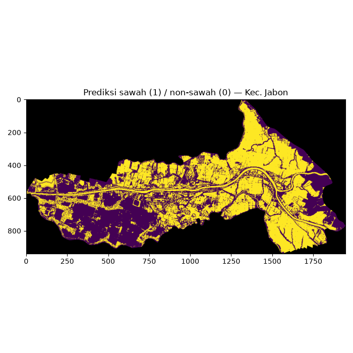
Visualisasi EDA fitur (6 gambar)#
Boxplot per band per kelas, tanda tangan spektral mean±std, histogram, korelasi antar band, PCA 2D, dan sebaran NDVI per kelas. File fig_jabon_boxplot.png s.d. fig_jabon_ndvi_violin.png di data/images/eksperimenjabon/.
import matplotlib
matplotlib.use('Agg')
import matplotlib.pyplot as plt
from sklearn.preprocessing import StandardScaler
from sklearn.decomposition import PCA
BANDS = ['B02', 'B03', 'B04', 'B08', 'B11', 'B12']
BCOLS = ['band_1', 'band_2', 'band_3', 'band_4', 'band_5', 'band_6']
if df_feat is None:
print('STATUS: BELUM TERSEDIA — visualisasi EDA dilewati.')
else:
sw = df_feat[df_feat['kelas'] == 'sawah']
ns = df_feat[df_feat['kelas'] == 'non_sawah']
fig, axes = plt.subplots(2, 3, figsize=(12, 7))
for ax, b, nama in zip(axes.flat, BCOLS, BANDS):
ax.boxplot([ns[b].to_numpy(), sw[b].to_numpy()])
ax.set_xticklabels(['non_sawah', 'sawah'])
ax.set_title(nama)
fig.suptitle('Sebaran nilai band per kelas (rata-rata poligon, DN Sentinel-2)')
fig.tight_layout()
fig.savefig(IMG + 'fig_jabon_boxplot.png', dpi=100)
plt.close(fig)
fig, ax = plt.subplots(figsize=(9, 5))
for g, lab, mk in [(sw, 'sawah', 'o'), (ns, 'non_sawah', 's')]:
m = g[BCOLS].mean().to_numpy()
s = g[BCOLS].std().to_numpy()
ax.errorbar(BANDS, m, yerr=s, marker=mk, capsize=4, label=lab)
ax.set_title('Tanda tangan spektral rata-rata per kelas')
ax.set_ylabel('DN rata-rata poligon')
ax.legend()
fig.tight_layout()
fig.savefig(IMG + 'fig_jabon_spektral.png', dpi=100)
plt.close(fig)
fig, axes = plt.subplots(2, 3, figsize=(12, 7))
for ax, b, nama in zip(axes.flat, BCOLS, BANDS):
ax.hist(ns[b], bins=15, alpha=0.6, label='non_sawah')
ax.hist(sw[b], bins=15, alpha=0.6, label='sawah')
ax.set_title(nama)
axes.flat[0].legend()
fig.suptitle('Histogram nilai band per kelas')
fig.tight_layout()
fig.savefig(IMG + 'fig_jabon_hist.png', dpi=100)
plt.close(fig)
corr = df_feat[BCOLS].corr().to_numpy()
fig, ax = plt.subplots(figsize=(6, 5))
im = ax.imshow(corr, vmin=-1, vmax=1)
ax.set_xticks(range(6), BANDS)
ax.set_yticks(range(6), BANDS)
for i in range(6):
for j in range(6):
ax.text(j, i, '{:.2f}'.format(corr[i, j]), ha='center', va='center', fontsize=8)
ax.set_title('Korelasi antar band (semua sampel)')
fig.colorbar(im, ax=ax)
fig.tight_layout()
fig.savefig(IMG + 'fig_jabon_korelasi.png', dpi=100)
plt.close(fig)
Xs = StandardScaler().fit_transform(df_feat[BCOLS].to_numpy())
P = PCA(n_components=2, random_state=SEED).fit_transform(Xs)
print('PCA explained variance:', PCA(n_components=2, random_state=SEED).fit(Xs).explained_variance_ratio_.round(3).tolist())
fig, ax = plt.subplots(figsize=(6, 5))
m1 = df_feat['kelas'].to_numpy() == 'non_sawah'
ax.scatter(P[m1, 0], P[m1, 1], alpha=0.7, label='non_sawah')
ax.scatter(P[~m1, 0], P[~m1, 1], alpha=0.7, label='sawah')
ax.set_xlabel('PC1')
ax.set_ylabel('PC2')
ax.set_title('PCA 2D fitur band per poligon')
ax.legend()
fig.tight_layout()
fig.savefig(IMG + 'fig_jabon_pca.png', dpi=100)
plt.close(fig)
ndvi_sw = (sw['band_4'] - sw['band_3']) / (sw['band_4'] + sw['band_3'])
ndvi_ns = (ns['band_4'] - ns['band_3']) / (ns['band_4'] + ns['band_3'])
fig, ax = plt.subplots(figsize=(6, 5))
ax.violinplot([ndvi_ns.to_numpy(), ndvi_sw.to_numpy()], showmeans=True)
ax.set_xticks([1, 2], ['non_sawah', 'sawah'])
ax.set_title('Sebaran NDVI per kelas (dari rata-rata poligon)')
fig.tight_layout()
fig.savefig(IMG + 'fig_jabon_ndvi_violin.png', dpi=100)
plt.close(fig)
print('tersimpan: 6 gambar EDA jabon')
PCA explained variance: [0.859, 0.113]
tersimpan: 6 gambar EDA jabon
Galeri EDA fitur#
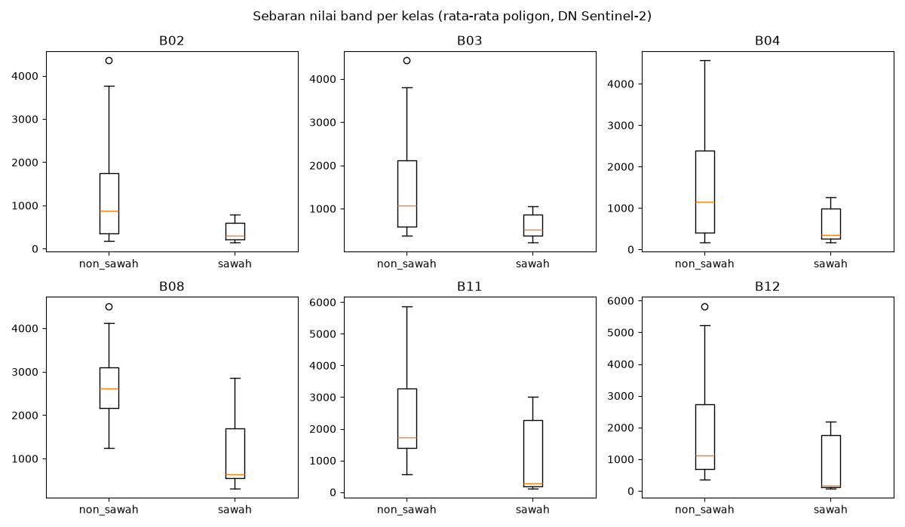
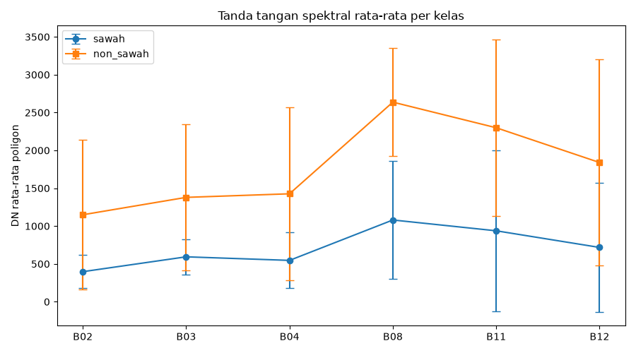
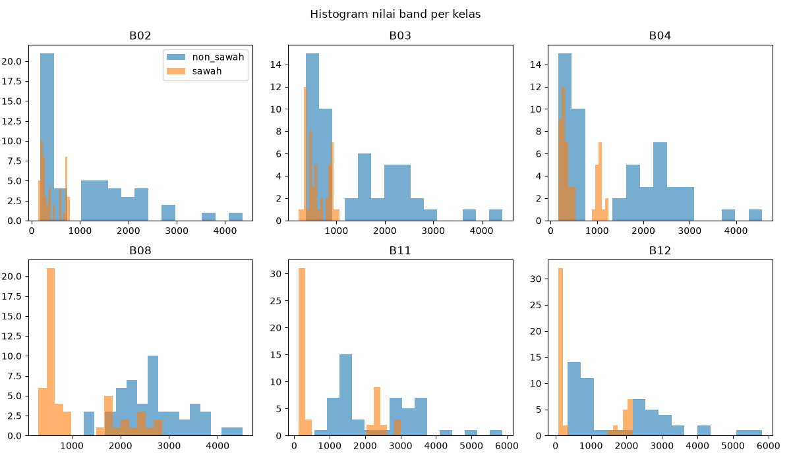
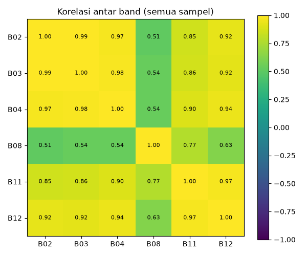
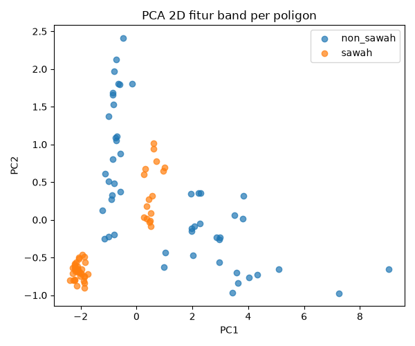
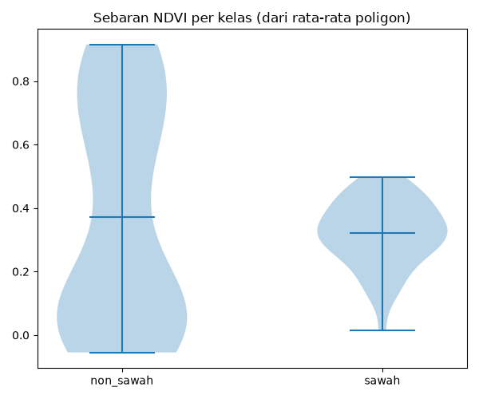
Visualisasi evaluasi dan peta (6 gambar)#
Confusion matrix, feature importance, komposit RGB + overlay 100 poligon sampel, peta probabilitas sawah, banding peta 4-kelas vs prediksi biner, dan peta NDVI Jabon.
import matplotlib
matplotlib.use('Agg')
import matplotlib.pyplot as plt
from matplotlib.colors import ListedColormap
from sklearn.model_selection import train_test_split
from sklearn.metrics import confusion_matrix as cm_fn
import geopandas as gpd
import rasterio
if df_feat is None:
print('STATUS: BELUM TERSEDIA — visualisasi evaluasi/peta dilewati.')
else:
import joblib
clf2 = joblib.load(OUT + '/jabon_rf.joblib')
X = df_feat.filter(like='band_').to_numpy()
y = (df_feat['kelas'] == 'sawah').to_numpy().astype(int)
_, Xte, _, yte = train_test_split(X, y, test_size=0.2, random_state=SEED, stratify=y)
pred = clf2.predict(Xte)
cm = cm_fn(yte, pred)
fig, ax = plt.subplots(figsize=(5, 4))
im = ax.imshow(cm)
ax.set_xticks([0, 1], ['pred non_sawah', 'pred sawah'])
ax.set_yticks([0, 1], ['aktual non_sawah', 'aktual sawah'])
for i in range(2):
for j in range(2):
ax.text(j, i, str(cm[i, j]), ha='center', va='center', fontsize=14)
ax.set_title('Confusion matrix (test 20 sampel)')
fig.colorbar(im, ax=ax)
fig.tight_layout()
fig.savefig(IMG + 'fig_jabon_cm.png', dpi=100)
plt.close(fig)
imp = clf2.feature_importances_
fig, ax = plt.subplots(figsize=(6, 4))
ax.barh(BANDS, imp)
ax.set_xlabel('importance')
ax.set_title('Feature importance RandomForest')
for i, v in enumerate(imp):
ax.text(v, i, ' {:.3f}'.format(v), va='center')
fig.tight_layout()
fig.savefig(IMG + 'fig_jabon_importance.png', dpi=100)
plt.close(fig)
src = rasterio.open(RASTER)
arr6 = src.read().astype(float)
ok6 = np.isfinite(arr6).all(axis=0) & (~(arr6 == src.nodata).any(axis=0))
rgb = np.stack([arr6[2], arr6[1], arr6[0]])
lo, hi = np.percentile(rgb[:, ok6], [2, 98])
rgb8 = np.clip((rgb - lo) / (hi - lo), 0, 1)
b = src.bounds
shp2 = gpd.read_file(SHP)
fig, ax = plt.subplots(figsize=(8, 8))
ax.imshow(np.moveaxis(rgb8, 0, -1), extent=(b.left, b.right, b.bottom, b.top))
shp2[shp2['kelas'] == 'sawah'].plot(ax=ax, facecolor='none', edgecolor='lime', linewidth=0.8, label='sawah')
shp2[shp2['kelas'] == 'non_sawah'].plot(ax=ax, facecolor='none', edgecolor='red', linewidth=0.8, label='non_sawah')
ax.set_title('Komposit RGB (B04/B03/B02) + 100 poligon sampel')
ax.legend()
fig.tight_layout()
fig.savefig(IMG + 'fig_jabon_rgb_sampel.png', dpi=100)
plt.close(fig)
flat = arr6.reshape(6, -1).T
okf = np.isfinite(flat).all(axis=1) & (~(flat == src.nodata).any(axis=1))
proba = np.full(flat.shape[0], np.nan)
proba[okf] = clf2.predict_proba(flat[okf])[:, 1]
fig, ax = plt.subplots(figsize=(7, 7))
im = ax.imshow(proba.reshape(arr6.shape[1], arr6.shape[2]), vmin=0, vmax=1)
ax.set_title('Probabilitas sawah (RandomForest)')
fig.colorbar(im, ax=ax, label='P(sawah)')
fig.tight_layout()
fig.savefig(IMG + 'fig_jabon_prob.png', dpi=100)
plt.close(fig)
src.close()
k4 = rasterio.open('../data/digitasi_kamal/klasifikasi_jabon.tif').read(1)
binmap = rasterio.open(OUT + '/jabon_classified.tif').read(1)
fig, axes = plt.subplots(1, 2, figsize=(13, 6))
cmap4 = ListedColormap(['black', 'green', 'darkgreen', 'gray', 'blue'])
axes[0].imshow(k4, vmin=0, vmax=4, cmap=cmap4)
axes[0].set_title('Acuan 4-kelas (0=nodata,1=sawah,2=veg,3=bangun,4=air)')
binm = np.ma.masked_equal(binmap, 255)
cmap_bin = plt.cm.viridis.copy()
cmap_bin.set_bad('black')
axes[1].imshow(binm, vmin=0, vmax=1, cmap=cmap_bin)
axes[1].set_title('Prediksi biner RF (1=sawah, 0=non-sawah)')
fig.suptitle('Banding peta acuan vs prediksi')
fig.tight_layout()
fig.savefig(IMG + 'fig_jabon_banding.png', dpi=100)
plt.close(fig)
b04 = arr6[2]
b08 = arr6[3]
with np.errstate(divide='ignore', invalid='ignore'):
ndvi_map = (b08 - b04) / (b08 + b04)
ndvi_map[~ok6] = np.nan
fig, ax = plt.subplots(figsize=(7, 7))
im = ax.imshow(ndvi_map, vmin=-1, vmax=1, cmap='RdYlGn')
ax.set_title('NDVI Jabon (dari B08/B04)')
fig.colorbar(im, ax=ax)
fig.tight_layout()
fig.savefig(IMG + 'fig_jabon_ndvi_peta.png', dpi=100)
plt.close(fig)
print('tersimpan: 6 gambar evaluasi/peta jabon')
tersimpan: 6 gambar evaluasi/peta jabon
Galeri evaluasi dan peta#
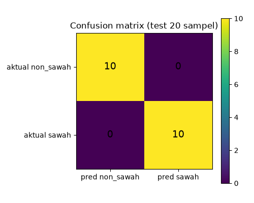
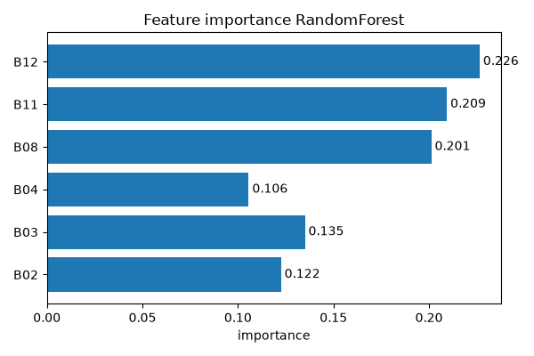
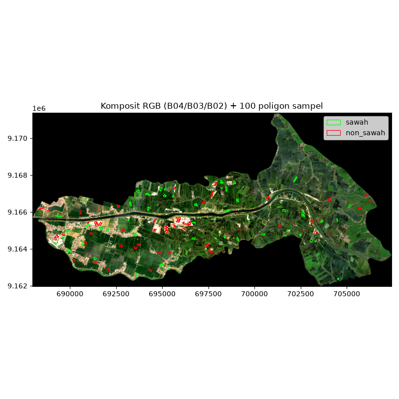
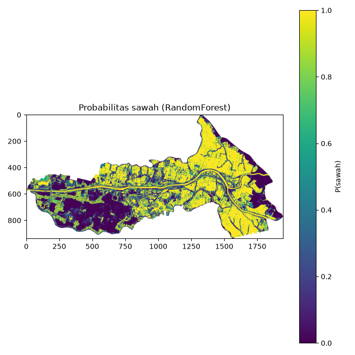
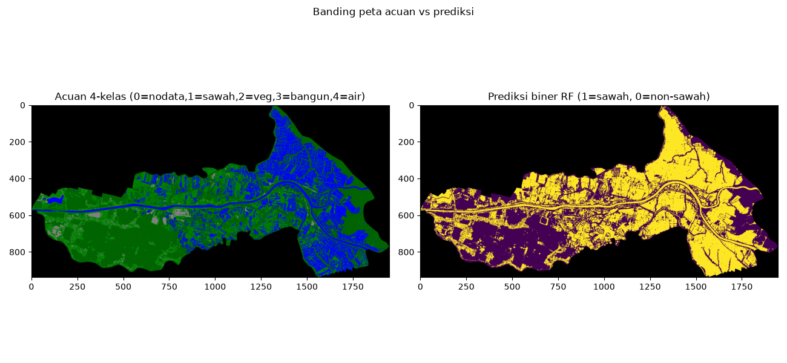
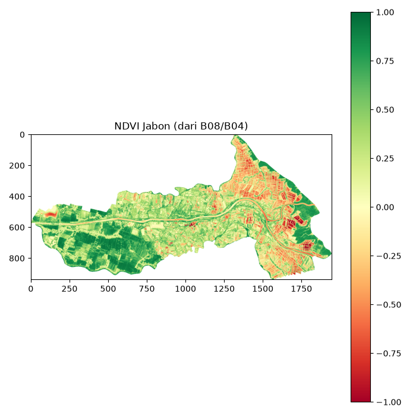
Unduh Berkas Klasifikasi Sawah Jabon#
jabon_features.csv — Fitur mean 6 band 100 poligon (50 sawah + 50 non-sawah):
Unduh jabon_features.csvjabon_metrics.csv — Metrik evaluasi (accuracy/precision/recall/F1):
Unduh jabon_metrics.csvjabon_classified.tif — Raster biner (1=sawah, 0=non-sawah, 255=nodata):
Unduh jabon_classified.tifjabon_rf.joblib — Model RandomForest terlatih (300 pohon):
Unduh jabon_rf.joblibjabon_sawah.shp — 100 poligon sampel (+ sidecar .dbf/.shx/.prj/.cpg):
Unduh jabon_sawah.shps2_jabon.tif — Komposit Sentinel-2 L2A Jabon 6 band (8,3 MB):
Unduh s2_jabon.tif
Status akhir 6.1 — SELESAI (Jabon)#
Training: 100 poligon (50 sawah + 50 non_sawah; non = pohon/kebun 25 + terbangun 25); test 20 sampel (10+10): confusion matrix [[10, 0], [0, 10]], accuracy/precision/recall/F1 = 1.0; CV 5-fold [1.0, 1.0, 1.0, 1.0, 0.95] mean 0.99. Nilai tinggi ini SIRCULAR (label kandidat dari raster yang sama) — satu fold yang tidak sempurna (0.95) justru lebih jujur daripada skor mutlak.
Feature importance: B12 (0.226) > B11 (0.209) > B08 (0.201) > B03 > B02 > B04 — SWIR+NIR dominan, masuk akal fisis untuk memisahkan lahan bera/vegetasi/terbangun.
Peta:
data/processed/jabon_classified.tif(1 = sawah, 0 = non-sawah, 255 = nodata); 840.049 piksel valid (45,9%), fraksi sawah 0,547. Pembanding acuan 4-kelas (klasifikasi_jabon.tif): sawah 26,0% — model biner OVER-prediksi sawah ~29 poin karena air/tambak (26,6% area, tak disampel) ikut terlabel sawah. Jangan pakai angka luas biner ini tanpa koreksi.File:
jabon_features.csv(100 baris),jabon_metrics.csv,jabon_rf.joblib,jabon_classified.tif,data/spasial/jabon_sawah.shp, 13 PNG (fig_jabon_preview.png+ 12 EDA/evaluasi).Arti FP/FN: false positive = non-sawah diprediksi sawah (over-estimasi luas); false negative = sawah tak terdeteksi (under-estimasi).
Syarat pakai serius: validasi lapangan/citra resolusi tinggi (khususnya bedakan tambak vs sawah) + tambah sampel air/tambak + split blok spasial, lalu latih ulang.